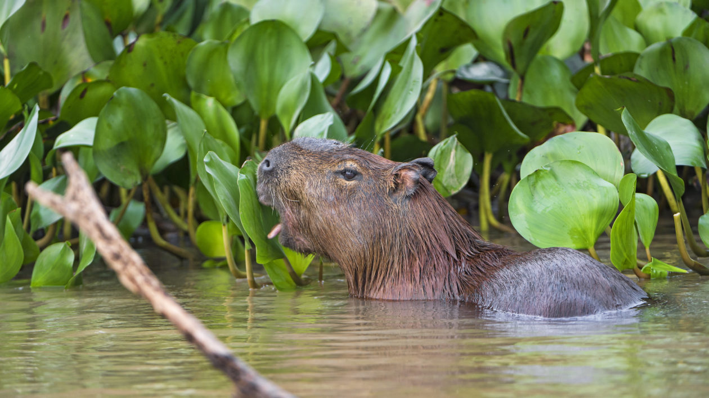

The capybara, sometimes referred to by its scientific name of Hydrochoerus hydrochaeris, is the largest rodent on Earth. It primarily lives in South America, but can be found in zoos all over the world. It is closely related to guinea pigs, which is easier to see in younger capybaras. It is a highly social animal, and can be found in groups as large as 100. Though, groups of up to 10 are more common.
The name capybara is derived from the Tupi word ka'apiûara. Tupi is a now
extinct language which was used by the Tupi people living in Brazil. Translated, this word means
'one who
eats slender leaves' or 'grass-eater'.
Its scientific name, Hydrochoerus
hydrochaeris, is derived from the Greek words hydro meaning 'water' and
choiros meaning 'pig'. So one could also call them 'water pigs'. This is what the German
language does, as the Germans call the capybara Wasserschwein, meaning 'water swine'.
Capybaras inhabit diverse ecosystems across South America, where they have adapted to both land and
water environments. The charismatic creatures are most commonly found in wetlands, such as marshes,
swamps, and along the banks of rivers, lakes, and ponds.
Their ideal habitat consists of abundant vegetation, including grasses, aquatic plants, and shrubs,
which provide them with food and cover. Capybaras are herbivores and graze on a variety of plants,
including grasses, reeds, and aquatic vegetation. They have specialized digestive systems that allow
them to efficiently extract nutrients from tough and fibrous plant material.
 Water is a vital component of their habitat as capybaras are semi-aquatic animals. They are
excellent swimmers and spend a significant amount of time in the water, where they find refuge from
predators, regulate their body temperature, and search for food. They have partially webbed feet,
which aid in swimming and navigating through aquatic environments.
Water is a vital component of their habitat as capybaras are semi-aquatic animals. They are
excellent swimmers and spend a significant amount of time in the water, where they find refuge from
predators, regulate their body temperature, and search for food. They have partially webbed feet,
which aid in swimming and navigating through aquatic environments.
Capybaras are social animals and often live in small groups known as troops or herds. These groups
can consist of several individuals, ranging from a few individuals to over 100. The troops establish
territories that include both land and water areas, ensuring access to food and suitable breeding
sites.
Their habitat also supports a diverse array of other wildlife. Capybaras play a crucial role in the
ecosystem as a food source for predators, such as jaguars, caimans, and anacondas. Additionally,
their grazing behavior helps maintain the balance of vegetation and supports a healthy wetland
ecosystem.
Capybaras are herbivores with a diverse and adaptable diet. Their primary food sources include
grasses, aquatic plants, and shrubs. They graze on a variety of vegetation, both on land and in
water, to fulfill their dietary needs.

Capybaras are known to be selective grazers, carefully choosing the most nutritious parts of plants.
They use their sharp incisors to crop grasses close to the ground, maximizing their foraging
efficiency. Their digestive systems are specialized for breaking down tough and fibrous plant
material, allowing them to extract as many nutrients as possible from their vegetarian diet.
This herbivorous diet not only sustains capybaras but also has significant ecological implications.
Capybaras contribute to seed dispersal by consuming fruits and vegetation, aiding in the
regeneration of plant species and maintaining the biodiversity of their habitats. Furthermore, their
grazing behavior can influence the structure and composition of plant communities, shaping
vegetation dynamics in their environment.
One of the primary dangers capybaras face is habitat loss. As human populations expand and urban areas
sprawl, their natural habitats, which include marshes, swamps, and grassy plains near bodies of water,
are being destroyed or fragmented. Deforestation, agriculture, and infrastructure development result in
the loss of vital feeding and breeding grounds for capybaras, pushing them into smaller and isolated
areas. This habitat loss leads to increased competition for resources, limited genetic diversity, and
reduced overall population numbers.
Additionally, capybaras face the threats of hunting and poaching. In some regions, they are hunted for
their meat and skin. Their meat is considered a delicacy in some South American countries, and their
hides are used for various purposes. Although hunting them is often illegal, it still persists in
certain areas, contributing to a decline in capybara populations. Efforts to enforce regulations and
promote sustainable practices are crucial for their protection.
There's a lot of places where you can see capybaras. We've made an extensive list of zoos and parks where you can see capybaras. You can find it here.
There is a lot of media attention for the capybara, for it is a very lovable creature. Owners of the capybara often proudly post pictures of it on Instagram. Here's a few accounts to enjoy: